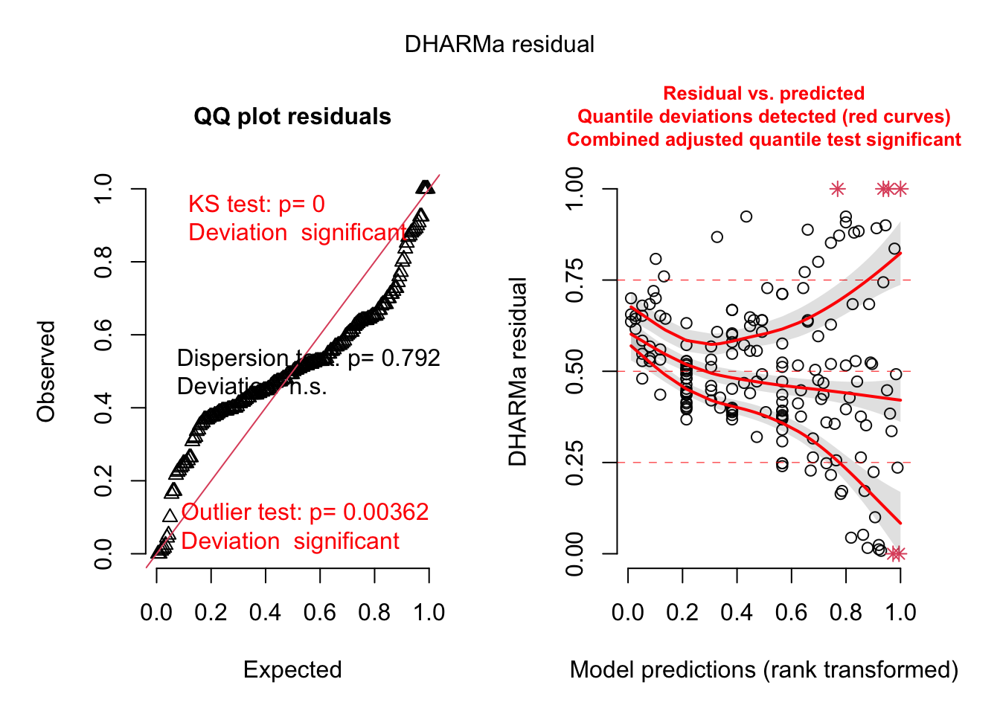

# model packageslibrary(MASS) # have to read this in before tidyverse library(lme4)
Loading required package: Matrix
library(glmmTMB) # ok if you don't have this - just comment it out
Warning in checkMatrixPackageVersion(): Package version inconsistency detected.
TMB was built with Matrix version 1.5.4
Current Matrix version is 1.5.3
Please re-install 'TMB' from source using install.packages('TMB', type = 'source') or ask CRAN for a binary version of 'TMB' matching CRAN's 'Matrix' package
Warning in checkDepPackageVersion(dep_pkg = "TMB"): Package version inconsistency detected.
glmmTMB was built with TMB version 1.9.3
Current TMB version is 1.9.4
Please re-install glmmTMB from source or restore original 'TMB' package (see '?reinstalling' for more information)
# diagnostics and model infolibrary(DHARMa)
This is DHARMa 0.4.6. For overview type '?DHARMa'. For recent changes, type news(package = 'DHARMa')
library(MuMIn)library(ggeffects)library(lmtest)
Loading required package: zoo
Attaching package: 'zoo'
The following objects are masked from 'package:base':
as.Date, as.Date.numeric
library(broom)library(here)
here() starts at /Users/kyleyahitas/Desktop/github/ENVS-193DS-final-project
── Conflicts ────────────────────────────────────────── tidyverse_conflicts() ──
✖ tidyr::expand() masks Matrix::expand()
✖ dplyr::filter() masks stats::filter()
✖ dplyr::lag() masks stats::lag()
✖ tidyr::pack() masks Matrix::pack()
✖ dplyr::select() masks MASS::select()
✖ tidyr::unpack() masks Matrix::unpack()
ℹ Use the conflicted package (<http://conflicted.r-lib.org/>) to force all conflicts to become errors
library(GGally)
Registered S3 method overwritten by 'GGally':
method from
+.gg ggplot2
library(tidyr)library(corrplot)
corrplot 0.92 loaded
library(dplyr)library(janitor)
Attaching package: 'janitor'
The following objects are masked from 'package:stats':
chisq.test, fisher.test
Scratch paper
Problem two
Questions: How does seed count vary with plot type (shrub or open), plant species, and total number of inflorescences? Is there a simpler model that explains seed count, and if so, what is it?
Independent Variable: Seed Count
Predictor Variable: Plot type (shrub or open) [binary], plant species , total number of inflorescences
#Load in Problem 2 datapollinator <-here("data", "shrubstudy_pollinator.ms.data.csv") |>read.csv()seed_ctwt <-here("data", "shrubstudy_seed_ctwt.ms.data.csv") |>read.csv()individual_flower <-here("data", "shrubstudy_individual_flower_counts.ms.data.csv") |>read.csv()community_flower <-here("data", "shrubstudy_community_flower_counts.ms.data.csv") |>read.csv()
# from peppa #Clean data#seed_ctwt_subset <- seed_ctwt |> #select(c("treatment", "species", "total_nr_infl", "nr_seeds")) |> #Plot type, plant species, total number of inflorescences - select relevant columns #drop_na(nr_seeds) #Thats a lot of data missing... should we do anything? #Not quite sure what the total number of inflorescences vs inflorescence collected means
# linear model, we know this is wrongseed_L1 <-lm(nr_seeds ~ treatment + species + total_nr_infl, data = seed_ctwt_subset2)# generalized linear model with Poisson distributionseedctwt2 <-glm(nr_seeds ~ treatment + species + total_nr_infl, data = seed_ctwt_subset2, family ="poisson")seedctwt2.a <-glm(nr_seeds ~ treatment + species + total_nr_infl, data = seed_ctwt_subset2, family ="poisson")# generalized linear model with negative binomial distributionseedctwt3 <-glm.nb(nr_seeds ~ treatment + species + total_nr_infl, data = seed_ctwt_subset2)seedctwt3.a <-glmmTMB(nr_seeds ~ treatment + species + total_nr_infl, data = seed_ctwt_subset2, family ="nbinom2")
plot(simulateResiduals(seed_L1))
qu = 0.75, log(sigma) = -2.784912 : outer Newton did not converge fully.

plot(simulateResiduals(seedctwt2))
qu = 0.5, log(sigma) = -2.296452 : outer Newton did not converge fully.
plot(simulateResiduals(seedctwt2.a))
qu = 0.5, log(sigma) = -2.296452 : outer Newton did not converge fully.
seedctwtas <-glmer(nr_seeds ~ treatment + species + (1|aspect) + total_nr_infl, data = seed_ctwt_subset_as, family ="poisson" )
Warning in checkConv(attr(opt, "derivs"), opt$par, ctrl = control$checkConv, : Model is nearly unidentifiable: very large eigenvalue
- Rescale variables?
#Warning message:#In checkConv(attr(opt, "derivs"), opt$par, ctrl = control$checkConv, :#Model is nearly unidentifiable: very large eigenvalue#- Rescale variables?
#seedctwtdfs <- glmer(nr_seeds ~ treatment + species + (1|dist_fr_shr) + total_nr_infl, data = seed_ctwt_subset_dfs, family = "poisson" )#Error in `contrasts<-`(`*tmp*`, value = contr.funs[1 + isOF[nn]]) : #contrasts can be applied only to factors with 2 or more levels
seedctwtwtsn <-glmer(nr_seeds ~ treatment + species + (1|shrub_num) + total_nr_infl, data = seed_ctwt_subset_sn, family ="poisson" )
Warning in checkConv(attr(opt, "derivs"), opt$par, ctrl = control$checkConv, : Model is nearly unidentifiable: very large eigenvalue
- Rescale variables?
#Warning message:#In checkConv(attr(opt, "derivs"), opt$par, ctrl = control$checkConv, :#Model is nearly unidentifiable: very large eigenvalue# - Rescale variables?
seedctwtwtpn <-glmer(nr_seeds ~ treatment + species + (1|plant_nr) + total_nr_infl, data = seed_ctwt_subset_pn, family ="poisson" )
Warning in checkConv(attr(opt, "derivs"), opt$par, ctrl = control$checkConv, : Model is nearly unidentifiable: very large eigenvalue
- Rescale variables?
seedctwtwttgnm <-glmer(nr_seeds ~ treatment + species + (1|tag_num) + total_nr_infl, data = seed_ctwt_subset_tgnm, family ="poisson" )
Warning in checkConv(attr(opt, "derivs"), opt$par, ctrl = control$checkConv, : Model is nearly unidentifiable: very large eigenvalue
- Rescale variables?
seedctwtwtdc <-glmer(nr_seeds ~ treatment + species + (1|date_collected) + total_nr_infl, data = seed_ctwt_subset_dc, family ="poisson" )
Warning in checkConv(attr(opt, "derivs"), opt$par, ctrl = control$checkConv, : Model is nearly unidentifiable: very large eigenvalue
- Rescale variables?;Model is nearly unidentifiable: large eigenvalue ratio
- Rescale variables?